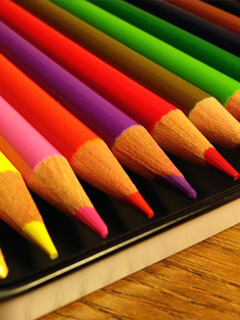

Sydney Distance Education School enables children to take classes without leaving their homes. Today, they make extensive use of the internet. Email and telephone discussions also help to bring about such learning.
Government restrictions only allows this school to accept students that fit into certain 'categories'
To continue reading Sydney Distance Education School Restrictions, click here
The term home schooling can strike fear in the hearts of many mums and dads. The very idea of taking on such a huge responsibility sounds dauntless to say the least. However, when compared to the many other courageous things that mums and dads do for their kids throughout the year, it isn’t really any more intimidating than say, giving birth! Parents are super heroes and home schooling can be just another of your super powers.
To continue reading Who Else Wants Stress-Free Homeschooling?, click here
 If you are interested in providing your child with an innovative and tailored learning experience, you’ll find it worth your time to learn about Sydney Distance Education Primary Schools.
If you are interested in providing your child with an innovative and tailored learning experience, you’ll find it worth your time to learn about Sydney Distance Education Primary Schools.
This unique form of teaching and student development allows you to secure specially designed materials for your child. These materials can be delivered via phone, email, post or website.
To continue reading Living in Sydney? Consider Distance Education for Primary School, click here
Why You Should Consider Distance Education in NSW
 If you have a child who will soon been attending school, or if you have recently moved to New South Wales, distance education schooling may be of interest to you.
If you have a child who will soon been attending school, or if you have recently moved to New South Wales, distance education schooling may be of interest to you.
Distance Education is a legitimate schooling option, without needing to attend a physical school campus. Many parents will opt to home school their children if there are reasons why they do not want them attending a public school. Recently, the NSW government made some changes to home schooling, adding more restrictions on families.
To continue reading Why You Should Consider Distance Education in NSW, click here